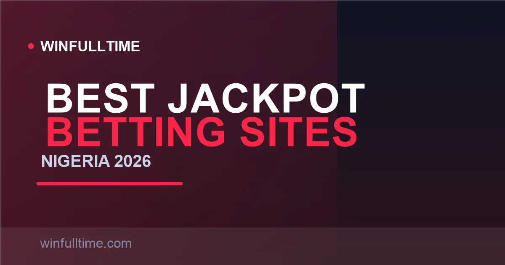

Best Jackpot Betting Sites in Nigeria 2026: Super9ja, Colossus & Daily Pools Ranked

A single ₦100 slip can win ₦10 million, and Bet9ja's betBOOM dangles a prize pool that tops out the far side of a billion naira. Nigerian jackpots are more varied than most markets — free-to-play weekly coupons, 12-match pools, and pool-share Colossus games all coexist. These are the sites we rate highest for jackpot betting in 2026.

Nigeria Jackpots at a Glance
Nigeria's jackpot market is split between two very different formats. The first is the fixed-prize coupon — predict every match on a short list and win a headline pot. The second is the pool bet — every entry feeds a shared prize pool that is divided among everyone who hits the winning tier. Understanding which format a site runs is the single most important thing before you enter.
| Jackpot | Operator | Format | Fixtures | Entry | Top Prize |
|---|---|---|---|---|---|
| Super9ja | Bet9ja | Coupon (pool) | 12 | Free (or ~₦100 paid) | ~₦10M |
| betBOOM | Bet9ja | Random multiplier | Pool | Paid line | Up to ~₦1B |
| KingMaker | BetKing | Coupon (pool) | 12 | Paid line | Tens of millions ₦ |
| Jackpot | SportyBet | Coupon | 12 | ~₦100–200 | Daily variable |
| Colossus | Merrybet | Pool share | 14 | ~₦50 | Share of ~₦100M |
Figures verified August 2026. Pool sizes and headline prizes roll over and change without notice — always confirm the current value on the operator's jackpot page.
How Nigerian Jackpots Actually Work
Almost every Nigerian coupon uses the same 1-X-2 format. The operator locks a list of fixtures — usually 12 — and you predict home win (1), draw (X) or away win (2) for each. Get them all right and you win the headline prize; land a near-miss and you usually still collect a tiered consolation bonus.
Two things surprised us when we tested these platforms. First, the real difficulty: a random entry on a 12-game coupon is roughly a 1 in 500,000 shot player-skill dependent, and even disciplined tipsters rarely hit a perfect card — the realistic value lives in the bonus tiers. Second, the two formats pay very differently: fixed-prize coupons hand you a flat sum, while pool bets split the kitty, so your payout shrinks if the pool is short of winners sharing your tier.
1. Bet9ja Biggest Headline Prizes
Bet9ja is the default jackpot home for Nigerian bettors, and it runs two flagship formats. Super9ja is their legendary weekly coupon — pick 12 fixtures and a perfect card delivers a guaranteed prize pool around ₦10 million. Crucially, Super9ja is free to enter: you can play the same coupon at no cost, with a paid ₦100 line available if you want the larger paid-jackpot prize structure.
The second format is betBOOM — Bet9ja's random-multiplier jackpot where your line is multiplied by a randomly drawn figure that can climb into the hundreds of millions and even toward ₦1 billion. It is a very different risk profile from a football coupon, but it is one of the most talked-about jackpot products in Nigeria. Bet9ja is KC Gaming Networks Ltd, licensed by the Lagos State Lotteries and Gaming Authority, with a nationwide retail shop network, a ₦50 minimum bet and one of the highest max-payout ceilings in the market at ₦50,000,000.
Pros
- Free-to-play Super9ja weekly coupon
- betBOOM's genuinely life-changing ceiling
- Widely available in retail shops and online
- Trusted, established local operator
Cons
- Super9ja's ₦10M pool is shared when many win
- betBOOM is luck-based, not football-skill-based
- Big pool coupons are brutally hard to perfect
Verdict: Start here. Free Super9ja costs nothing, and betBOOM is the only place in Nigeria where a small line can scale into nine figures.
2. BetKing Best KingMaker Pools
BetKing's KingMaker jackpot is the most technically sophisticated in Nigeria. The pool feeds from thousands of entries each week and regularly climbs into the tens of millions of naira, with a tiered near-miss structure that pays consolation prizes for getting most of the coupon right — so a close card almost always returns something.
What sets BetKing apart is the quality of the surrounding product. The 300% accumulator boost applies as you build your jackpot combos, and the FlexiCut feature insures a near-miss combination by refunding or reducing your loss on short-priced picks that let you down. BetKing is SV Gaming Ltd (KingMakers), LSLGA-licensed, with a ₦50 minimum bet, a big retail shop network and one of the fastest payout engines in the market via OPay bank transfers.
Pros
- Rich tiered near-miss payouts
- FlexiCut hedges near-missed combos
- Fast OPay withdrawals
- Large retail + online presence
Cons
- Pool concentrates during big tournament weeks
- Fewer free-entry jackpot options than Bet9ja
Verdict: The best blend of pool size and insurance — ideal for accumulator players who want their jackpot tickets protected by FlexiCut.
3. SportyBet Daily Action
SportyBet runs a 12-match football jackpot that refreshes on a near-daily cadence rather than locking you to a single weekend coupon. That makes it the best option for bettors who want jackpot-style action more than once a week. The jackpot leans on EPL, Champions League and the Nigerian NPFL, so local bettors get fixtures they actually follow.
Entries run at roughly ₦100 to ₦200 depending on the round, and the interface is among the fastest and cleanest in Nigeria — SportyBet is often praised as the best mobile betting app in the market. Min deposit is ₦100, and OPay withdrawals frequently land within minutes. The trade-off is that the headline jackpot pool is more modest than Bet9ja's or BetKing's big weekly pools.
Pros
- Jackpot nearly every day, not just weekends
- NPFL included alongside the big European leagues
- Excellent, fast mobile experience
Cons
- Smaller headline pool than Bet9ja or BetKing
- No retail shops — online only
Verdict: The pick if you want a daily jackpot fix with a fast app and NPFL-focused fixtures.
4. Merrybet Colossus Pool Share
Merrybet's Colossus is Nigeria's clearest example of a pure pool-share jackpot. For an entry around ₦50 you predict a 14-match card, and all entries feed a prize pool that regularly sits near ₦100 million. If nobody nails the full 14/14, the pool rolls over and grows — which is when the headline number balloons.
Because it is a pool bet, two people hitting 14/14 split the jackpot, and there are consolation tiers for getting 13 or 12 correct. That makes Colossus high-variance: the upside is enormous when the pool has rolled, but your share of a modest pool is smaller. Merrybet has operated in Nigeria for years with a solid local reputation.
Pros
- Very cheap ₦50 entry
- Rollover pools can grow enormous
- Low cost of entry makes it accessible to all
Cons
- Payout shrinks when the pool is shared
- 14 perfect picks is a genuinely hard card
Verdict: Great for cheap, high-variance pool play — especially when the Colossus pool has rolled over for a few weeks.
Jackpot Comparison Table
| Operator | Format | Fixtures | Entry | Top Prize | Near-Miss Tiers |
|---|---|---|---|---|---|
| Bet9ja | Super9ja + betBOOM | 12 / random | Free or ~₦100 | ~₦10M / up to ~₦1B | Yes |
| BetKing | KingMaker | 12 | Paid line | Tens of millions | Yes (tiered) |
| SportyBet | Jackpot | 12 | ~₦100–200 | Daily variable | Yes |
| Merrybet | Colossus (pool share) | 14 | ~₦50 | Share of ~₦100M | 13 / 12 correct |
Entry prices and pools verified August 2026; always confirm current values on the operator's jackpot page before entering.
Tip: free coupons change the maths
Bet9ja's Super9ja is free to enter, which gives you a genuinely zero-cost shot at a ₦10 million pool every week. Always take the free version of any coupon a site offers — it costs nothing and keeps you in the habit without risking your bankroll.
Jackpot Taxes in Nigeria: What You Actually Receive
Nigeria's betting tax picture is lighter than Kenya's. There is no excise tax on stakes in the way Kenyan bettors pay, and casual bettors do not file an income tax return on their winnings. Instead, regulated operators apply a small withholding tax — typically around 1% on payouts above a threshold — and remit it to the Federal Inland Revenue Service (FIRS).
The practical effect is that your headline jackpot prize is very close to what you receive, usually with only a fractional deduction withheld. Always check your account payout history to see the exact net figure credited to your bank or wallet, because the withholding is applied automatically and varies slightly by operator.
Jackpot Strategy Tips for Nigerian Bettors
Tip 1: Play the free coupons first
Super9ja and similar free-to-enter coupons give you a real chance at a real pool with zero risk. Claim them every week without fail — the free version is genuinely free and you lose nothing by entering.
Tip 2: Play the bonus tiers, not just the jackpot
A perfect 12/12 is a lottery hopeful, not a plan. The realistic play is the near-miss tiers — 10 or 11 correct on most coupons still pays. Build your card to land comfortably in the bonus brackets, then let the perfect-score dream ride on top.
Tip 3: Know whether you're buying fixed or shared
Fixed-prize coupons (SportyBet) pay a flat headline sum. Pool bets (BetKing KingMaker, Merrybet Colossus) split the pool, so your payout depends on how many others share your tier. Don't be ambushed by a smaller-than-expected payout on a pool bet — check the format before you enter.
Tip 4: Cap your coverage
Using double chance on close games raises your ticket cost by 2x per covered match. Cap coverage at one or two genuine coin-flips — the 2^n cost formula makes runaway coverage the fastest way to burn a jackpot budget.
Frequently Asked Questions
Which betting site has the biggest jackpot in Nigeria in 2026?
Bet9ja's Super9ja free-to-play pool guarantees a ₦10 million weekly jackpot and is the most famous in Nigeria, while betBOOM draws on a random multiplier that can reach ₦1 billion. BetKing's KingMaker runs pools that regularly climb into the tens of millions of naira, and Merrybet's Colossus offers a share of a ₦100 million pool.
Is the Bet9ja Super9ja jackpot free to play?
Yes. Super9ja is Bet9ja's free-to-enter weekly coupon, so predicting 12 fixtures correctly costs nothing. A paid version with the same picks carries a ₦100 entry and a top prize of up to ₦10 million for a perfect 12/12.
Are jackpot winnings taxed in Nigeria?
Nigeria does not apply an excise tax on betting stakes the way Kenya does, and casual bettors do not file an income return on winnings. Regulated operators may deduct a small withholding (often 1% of payouts over a threshold) and remit it to the FIRS, so check your account history to see the exact net figure credited.
How do jackpot near-miss bonuses work?
Most Nigerian jackpots pay tiered consolation prizes for getting close to the perfect score. On BetKing's KingMaker you can collect for a set number of correct picks even without nailing the full coupon, and these tiers are tied to the weekly prize pool, so the exact amount varies as more entries join and share each tier.
What is the minimum stake for a jackpot entry in Nigeria?
Paid entries start at around ₦100 on most operators: Bet9ja sells Super9ja paid entries at ₦100 per line, SportyBet's 12-match jackpot runs at roughly ₦100–₦200, and Merrybet's Colossus is available from about ₦50. Free-to-play Super9ja and similar coupons cost nothing at all.
Can You Predict This Week's Coupon?
Put your jackpot picks to the test with data-driven predictions and head-to-head analysis built for Nigerian fixtures and big European leagues.
Last updated: 30 August 2026 | By Tochukwu Mesigo |
Build Winning Accumulator Tickets
Generate optimized accumulator combinations from today's data-driven predictions. Set your target odds and get instant ticket suggestions.
Free Ticket Builder →